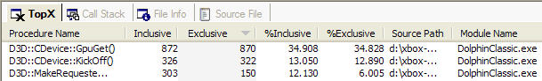

CPX TopX View
The TopX view displays the sampled function calls in a flat view, arranged in the order the user specifies. By default, they are arranged from most sampled to least sampled. Double-clicking on a function launches the Source File View and shows the source code for that function, if it is available.

The TopX view provides seven different ways of sorting the data. The data can be arranged alphabetically, by address, by module name, or by the number of samples recorded for the function. The user can select which way to sort the data by clicking on one of the column headers.
The TopX view includes the following columns:
- Procedure Name
- Name of the function that was sampled. If CPX can't resolve the symbols, the module name plus the memory address of the function appear in place of the name. The symbols path can be set using the Settings Dialog Box.
Note No symbols are provided for functions from the xbdm.dll and vx.dxt modules. These are system functions that will never take up more than a fraction of time.
- Inclusive
- The total number of samples in both the function and all subroutines called by the function.
- Exclusive
- The total number of samples in the function, not counting the number of samples that occured in subroutines called by the function.
- %Inclusive
- The percentage of inclusive samples of the function compared to the total number of samples. The total number of samples is shown in the File Info View.
- %Exclusive
- The percentage of exclusive samples of the function compared to the total number of samples. The total number of samples is shown in the File Info View.
- Source Path
- The full path to the source file containing the function.
- Module Name
- The name of the module containing the function.